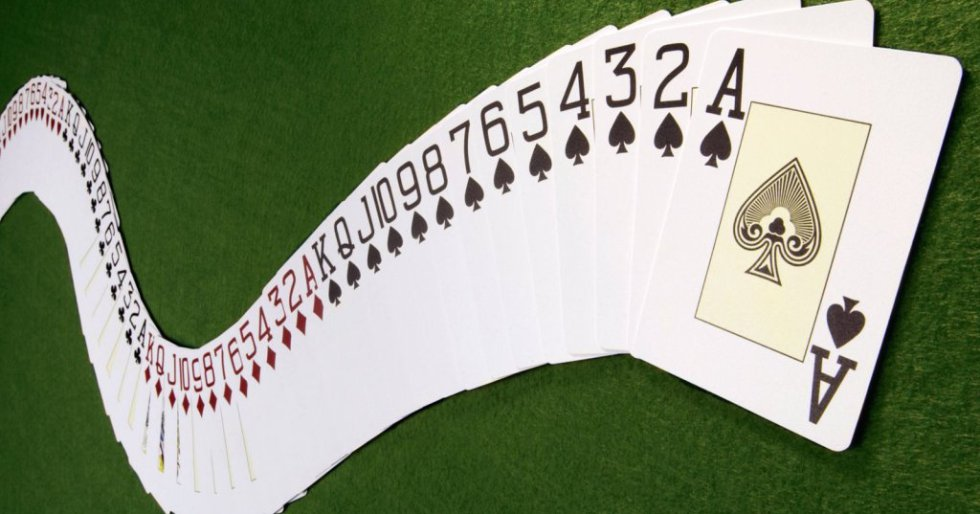
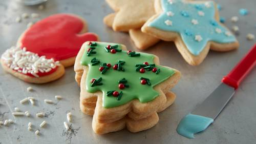

I really like to water ski. It is one of my favorite things to do. I ski every year from March until October because we live in the South and it is totally warm enough to ski for 8 months out of the year. Clemson Ski Team
I do not usually get enough sleep and I wish I could. It is scientifically proven that teenagers, like myself, need around 10 hours of sleep each night but this is completely unrealistic with school, homework, and sports. That is why I enjoy sleeping so much on the weekends. Health Benefits of Sleep
I am not very good at bowling but sometimes I can do really well. One time I was playing with my dad and uncles against my brother and cousins in a team bowling competition and I got a couple of strikes that allowed us to win the game. It was totally awesome because I am very competitive and I like to win games like that. AMF Bowling Lanes
I like to eat a lot of chocolate because it is extrememly delicious. Recently, Catalina has been bringing me choclate that she bought in Colombia, South America. It is the best chocolate I have ever tasted. Plus, each piece comes with a sticker of an iconic location or animal in Colombia, which means the chocolate is educational.Buy Some Chocolate!
I play a lot of card games with my family and it is one of my favorite things to do in my free time. Over the years I have learned more games that I can count and I continually learn more. Playing card games is one of the best ways my family like to spend time together, which is probably why I constantly ask my friends to play games with me too. Top Card Games
This is a wonderful show which is on Netflix. Most episodes are about twenty minutes long, which makes binge watching it even easier. I find the show to be very funny, especially whe Jim pranks Dwight. Dwight is by far my favorite character, despite the fact that I really do not like beets. The Office Wikipedia

I like the summer for many reasons. First, it means my brother will be home from college, which is always better than when he is away because I miss time a lot. Second, in the summer, especially in the South, the weather is delightful and by that I mean hot. When it is hot, that means we can swim and ski and everything is better. Summer Olympics
Every year my family makes lots and lots of christmas cookies. We make hundreds of butter cookies, snickerdooodles, ginger cookies, krinkle cookies, and pretzel bark. We also make at least ten pounds of fudge. It is a really fun and intense process that my mom, grandmother, sister and I go through every year. It is a really fun way we all get to spend time together and make food for the whole family to share and give to others. Christmas Cookie History
When I was in second grade, I began reading the Harry Potter series and I have loved it ever since. The books are incredible from the detail to the amazing plot and unforgettable characters. I like to read the books again as often as I can and the movies are a must have for long raod trips. Sorting Hat Quiz
I have been playng the piano for about ten years now. It is something I do to relieve stress and it makes life more fun. I have learned to play a lot of different songs from classical music like Fur Elise and Solfeggietto to Christmas songs like Santa Baby and from pop music like Beyonce's Halo to alternative music like Evanescene's Bring Me To Life. Solfeggietto YouTube